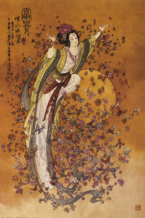
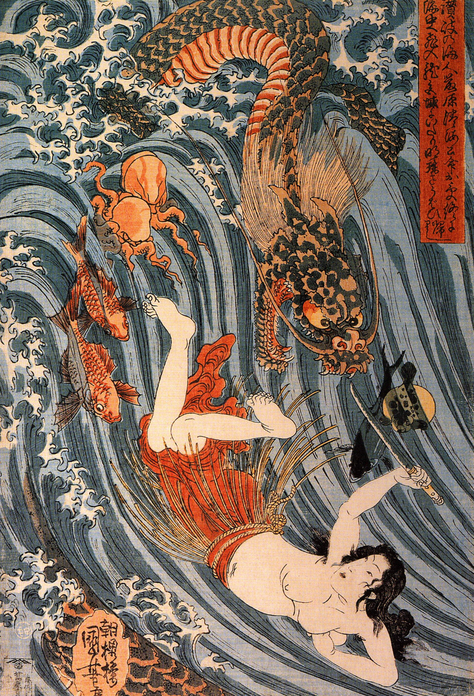
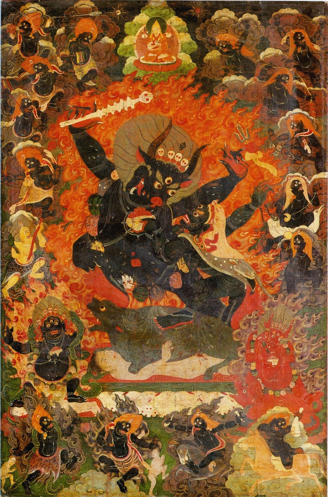
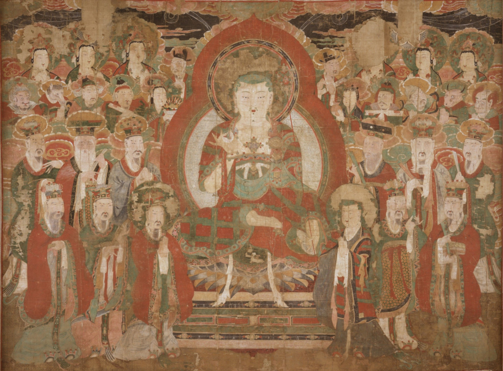
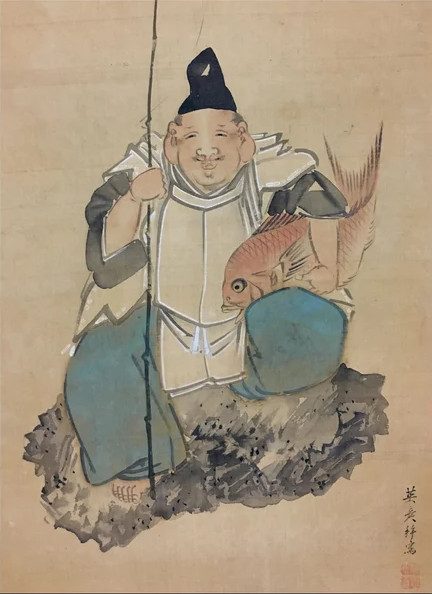

Antes da criação de tudo em um período conhecido como Kuniumi. Os primeiros Kamis, os Kotoamatsukami (別天神), surgiram a partir do caos, o principal destes era Ame-no-minakanushi, o primeiro Kami a existir no universo, ele é associado a estrela do norte e a constelação das sete estrelas, uma conotação que não durou muito tempo. Por conta do conflito gerado com a vinda dos missionários Budistas durante o período Heiano, o culto a este Deus quase desapareceu. Seu nascimento foi seguido de outros 4, Takamimusubi, Kamimusubi, Umashi’ashikabihikoji e Amenotokotachi, estes 5 deuses criaram Takamagahara (高天原), os céus e Ashihara no Nakatsukuni (葦原の中つ国), a terra e os ligaram por uma ponte chamada Ama-no-uki-hashi.
Estes 5 deuses foram seguidos pelos Kamiyonanayo, os deuses que vieram após a criação e que ao contrário dos anteriores, vieram em pares de homens e mulheres com gênero definido, eles eram Uhijini e Ikuguhi, Otonoji e Otonobe, Omodaru e Aya-kashiko-ne e por fim Izanagi-no-Mikoto e Izanami-no-Mikoto.
Estes deuses não possuem uma forte adoração apesar de sua importância na mitologia shintoísta, não existem templos conhecidos onde eles podem ser adorados
Izanagi e Izanami

Izanagi e Izanami foram os ultimos deuses Celestiais a surgirem durante o Kuniumi, o jovem casal recebeu a ordem dos demais Deuses para que consolidassem a criação das ilhas Japonesas, assim começando o Kamiumi, o surgimento do japão e o nascimento dos deuses terrestres. Para fazerem isto eles receberem Amenonuhoko, uma lança incrustada com jóias e que em algumas fontes da história era na verdade uma Naginata. O casal teria descido pela ponte em direção ao oceano primordial que se tornaria a terra, Izanagi remexeu a água turva e barrenta do mundo e ergue a lança para um pouco de água respingasse dela, quando uma unica gota de água respingou da lança e caiu de volta ao oceano, uma ilha surgiu. Eles chamaram essa ilha de Onogoro-Shima e fizeram sua casa lá, até hoje ninguém sabe onde fica essa ilha
Na ilha, Izanagi e Izanami construiram um enorme palácio e o adornaram com colunas e pilastras. Os deuses ordenaram que eles procriassem a partir de um ritual muito específico, neste ritual, eles iriam se encontrar na frente da casa, iriam virar de costas um para o outro e dar a volta na casa, ao se encontraram do outro lado, Izanagi se curvaria e depois Izanami, e após isso, eles poderiam fazer sexo entretanto, a primeira vez que fizeram o ritual, fizeram errado com Izanami se curvando primeiro, quando tiveram um filho, hiruko nasceu sem braços, sem pernas e sem ossos então teriam mandado ele em um barco a deriva pelo oceano antes de seu terceiro aniversário. A próxima vez que tentaram o ritual, eles fizeram certo e assim conseguiram criar as 8 ilhas principais do Japão: Tsushima, Iki, Oki, Iyo, Awaji, Tsukushi, Sado e Yamato, a ilha principal do país
Após originar as ilhas do Japão, o casal passou a dedicar sua vida para gerar novos deuses, deuses nascidos na própria terra, estes deuses formaram o conceito de Yaoyorozu no Kami e povoaram a terra, tudo que o casal tocava, o ar que respiravam, a comida que comiam ou deixavam de comer, sua urina, suas fezes e seu sangue, deuses estavam nascendo o tempo todo além daqueles que nasciam tradicionalmente quando os dois transavam. Kagu-Tsuchi, um deus do fogo teria sido o ultimo criado por Izanami, seu nascimento teria sido desastroso, queimando a passagem vaginal de Izanami e a matando. A morte de Izanami teria abalado Izanagi profundamente, enquanto ele enterrava sua irmã, suas lágrimas se transformavam em deuses que apareciam para consola-lo, enfim, um dia ele teria decidido acabar com a vida de Kagu-Tsuchi, usando a espada de Dez mãos, Ame no Ohabari, ele teria cortado a cabeça de seu filho, de seus restos mortais, mais deuses surgiriam. Após isso, desejando se encontrar sua esposa, ele vai para Yomi, o mundo dos mortos de acordo com o shinto, lá ele encontra sua esposa coberta por escuridão, quando ele pediu para ela retornar ao mundo, ela rejeitou, dizendo que já havia comida da comida servida no mundo dos mortos e não poderia retornar, ao fim, ela pediu para que Izanagi não olhasse para seu rosto. O homem teimoso quebrou esta promessa e ao olhar ao seu rosto, viu apenas um cadáver comido por vermes, furiosa, Izanami manda o Deus do Trovão, Raijin e as Yomotsu-Shikome, Mulheres Onis de Yomi atrás de Izanagi, enquanto fugia, Izanagi joga uma bandana que estava em sua cabeça e depois seu pente para dispersar os monstros, no fim, ele sela a passagem para Yomi com uma pedra. Izanami joga maldições contra seu marido dizendo que todo dia mataria mil pessoas na terra, Izanagi responde sua maldição dizendo que faria com que mil e quinhentas pessoas nascessem todos os dias
Amaterasu

Após escapar de sua irmã em Yomi e selar a entrada, Izanagi viajou para uma cachoeira onde tirou sas vestes e lavou seu corpo, neste momento 3 Deuses nasceram, ao enxaguar seu olho esquerdo, Amaterasu, a Deusa do Sol nasceu, ao enxaguar seu olho direito, Tsukuyomi, a Deusa da Lua nasceu e ao enxaguar seu nariz, Suzanoo, o Deus selvagem nasceu. Izanagi delegou os 3 Deuses para suas funções, porém Suzanoo, triste com a ausência de sua mãe, questiona Izanagi se a pode visitar no mundo dos morto, Izanagi fica furioso e o expulsa de sua função. Antes de ir embora, Suzanoo sobe aos céus para se despedir de Amaterasu, a deusa suspeita de suas intenções e aparece para ele completamente armada e vestindo uma armadura. Suzanoo propõe então um trato para mostrar sua sinceridade, os dois Deuses apresentam objetos sagrados que possuíam, eles iriam então trocar os objetos entre si, comer e então cuspir de volta. Suzanoo apresentou a espada Totsuka no Tsurugi, Amaterasu comeu a espada e então a cuspiu, quebrando-a em 3 partes, dessa divisão, 3 deusas surgiram: Takiribime, Ichikishima-hime e Tagitsu-hime. Suzanoo pegou as contas do rosário que Amaterasu usava para enrolar seus cabelos, comeu e cuspiu, gerando 5 deuses: Ame-no-Oshihomimi, Ame-no-Hohi, Amatsuhikone, Ikutsuhikone e Kumano-no-Kusubi. Amaterasu clamou que os deuses gerados por Suzanoo pertenciam a ela pois teriam sido gerados por um item dela, Suzanoo, furioso e temperamental, causa um alvoroço no palácio celestial, jogando um cavalo nos aposentos de Amaterasu e matando uma ninfa que vivia lá. Amaterasu assustada, se escondeu na caverna Ama-no-Iwato, colocando os céus e a terra em escuridão profunda
Enquanto Amaterasu estava escondida na caverna, os deuses terrestres, liderados por Omoikane, o Deus do conhecimento, desenvolveram um plano para fazer com que ela saia: Eles colocaram diversas magatamas nos galhos de uma árvore que ficava na frente da caverna e em um dos galhos colocaram também um espelho, Ame-no-Koyane-no-Mikoto começou a recitar diversos poemas. Ame-no-Uzume, a deusa das manhãs e das artes começou a dançar em frente aos demais deuses enquanto segurava uma pedra de jade em sua mão e um sino na outra, isto fez com que os demais deuses logo começassem a gargalhar. Amaterasu questionou a razão da festa e Uzumu respondeu que eles estavam celebrando que um Deus maior que ela havia aparecido. Curiosa, Amaterasu se aproximou da saída da caverna para ver quem era, ao se ver no reflexo do espelho, Ame-no-Tajikarao puxou sua mão e a trouxe de volta da caverna e a selou com corda. A dança feita por Uzumu logo recebou um nome oficial e passou a ser parte da liturgia oficial do Shintoísmo, Kagura.
Um dia, os Deuses celestiais incluindo Amaterasu viram que a terra estava em calamidade, ela estaria populada por kamis cruéis e com corações ruins, o decreto oficial da Deusa do sol foi que a terra fosse pacificada e que o seu controle fosse passado aos Deuses celestiais para isso, Amaterasu ordenou que Ame-no-Oshihomimi, um de seus filhos, descesse a ponte que conecta o céu e a terra para averiguar a situação, o menino ficou com medo do tumulto e se recusou a descer. Amaterasu então mandou outro filho seu, Ame-no-hohi, o mais poderoso de todos entretanto, a lábia de Okuninushi era tão grande que o menino se recusou a voltar para sua mãe e traiu os deuses do céu, novamente, Amaterasu mandou um mensageiro, Ame-no-wakahiko. Entretanto, ele também veio a se juntar com Okuninushi e até mesmo se casou com sua filha Shitateru-hime, Amaterasu, visivelmente frustrada, enviou um Faisão para questionar seu filho. Sob as ordens de Ame-no-Sagume, uma deusa terrestre, Wakahiko disparou uma flecha contra o faisão, o matando. A flecha sangrenta teria atravessado o céu chegando aos pés de Amaterasu que furiosa teria a arremessado de volta para a terra, matando Ame-no-Wakahiko instantaneamente.
八百万の神 - Yaoyorozu no Kami, miríades de deuses
Haniyasu-no-Kami
Quando Izanami morreu dando a luz para o deus do fogo Kagu-Tsuchi, dos seus restos mortais, diversos deuses nasceram, de suas fezes, nasceram um casal de Deuses: Haniyasu-hiko e Haniyasu-hime, os dois logo se uniram para formar uma unica Deusa, Haniyasu-no-Kami, uma Deusa da terra, da argila e da cerâmica
Haniyasu é tipicamente associada a prática já a muito tempo extintas na cultura Japonesa, seus templos são tipicamente localizados em Fukuoka e são conhecidos por serem no formato de Kofuns. Suas vestes são baseadas nas roupas de sacerdotizas Haniwa, utilizadas para representar mulheres pertencentes ao clérigo como mikos, e eram tipicamente utilizadas como a base para a roupas da mulheres no período Kofun. Ela também utiliza um colar que consiste em magatamas, contas no formato de vírgulas muito comuns entre o período Jomon e Kofun, inicialmente usadas como objetos de ritual e depois como símbolos de divindades
No reino Animal, a lei do mais forte é a unica que vale, os espíritos humanso que lá habitavam era subjugados e escravizados pelos espíritos animais. Os humanos então foram forçados a permanecerem em Tiryagyoni, o reino dos desejos e a capital das bestas para se manterem seguros. Os espíritos humanos rezaram para escaparem do controle das bestas, esta reza foi atendida por Haniyasu que utilizou seus poderes para criar idolos feitos de barro para governar o reino animal e eliminar as bestas de uma vez por toda. Estes guerreiros de barro, os Haniwa, não se sentem doentes nem cansados, não possuem emoções e obedeciam ordens sem questionar entretanto, a cobiça de Haniyasu cresceu muito grande, com a ajuda de vocês, ela cometeu a maior de todas as heresias e utilizou a alma e o corpo dos cidadões de Tiryagyoni para criar um ídolo opressivo que imitasse o Yama
Takeminakata

Takeminakata-no-Kami também conhecido como Suwa Myōjin ou "O Deus manifesto de Suwa" era o governador do mundo de Ashihara no Nakatsukuni antes do aparecimento da linhagem imperial Japonesa. Ele governava o mundo com punho de ferro, comandando os demais deuses como um exército militar. Seu pai era Ōkuninushi, o Deus da agricultura, medicina e o primeiro patrono do Japão, este Deus teve um papel muito importante na criação do Japão ao tornar a terra habitável aos humanos e criar selos e amuletos que os protegeriam contra doenças e calamidades
Após ter todas as suas tentativas de dominar a terra frustradas. Amaterasu decidiu então enviar Takemikazuchi, o deus do trovão, nascido do sangue de Kage-Tsuchi, o deus do Fogo e Itsu-no-Ohabari, nascido da espada utilizada para matar o Kagu-tsuchi, ao chegar na terra, os guerreiros desafiaram Okuninushi para um duelo, o velho então apresentou seus filhos, entre eles, Takeminakata que carregava uma montanha nas pontas dos dedos. A batalha, considerada a primeira luta de sumô da história terminou com a vitória de Takemikazuchi e a fuga de Takeminakata para a região do lago de Suwa. Com a derrota de Takeminakata, Okuninushi decidiu ceder a terra para os descendentes de Amaterasu e em troca, ele passaria a governar Yomi
Em Suwa, Takeminakata construiu um panteão ao seu redor, se misturando com diversos Deuses locais e assumindo diversas formas diferentes. Durante a invasão Mongol ao Japão por volta do século XIV, Takeminakata teria assumido a forma de um nuvem de 5 cores parecida com uma serpente, ele teria então viajado para o oeste para auxiliar os soldados a impedir a invasão, as duas tentativas de invasão foram frustradas por redemoinhos e tempestades criadas por este Deus, desde então, Takeminakata passou a ser considerado o Deus da Guerra do Shinto e o Deus Serpente de Suwa.
竜 - Dragões, governadores dos céus
Ōwatatsumi-no-kami
Quando Izanagi se banhou na cachoeira depois de sair de Yomi, a água que corria pelo seu corpo e caia de volta se transformou em diversas criaturas diferentes incluindo um dragão, este dragão chamado de Watatsumi passou a governar os diversos oceanos do planeta, alguns mais fundos e outros mais rasos. O dragão rapidamente se tornou símbolo do poder dos mares, as pessoas passaram a associar ele com rituais para sucesso das colheitas, orações para vinda de chuva e sucesso na pesca, ele era considerado o responsável pela vinda de chuva e tempestade e foi rapidamente considerado o governador do céu ao lado de Amaterasu
O palácio em que o Rei Dragão, conhecido também como Ryuujin, morava ficava localizado no fundo do mar, o palácio era feito de conchas e corais vermelhos e brancos, ele possuia diversas jóias que permitiam que ele controlasse as ondas e os animais que viviam nos mares, o Rei Dragão vivia junto com a princesa Oto-hime e era pai da Deusa Toyotama-hime que logo se casou com o arqueiro Hoori, ancestral da família real Japonesa e Avô do imperador Jimmu, o primeiro imperador do Japão.
Na natureza, existem 3 atributos principais para toda a existência, entende-se que o número 3 representa um equílibrio quase perfeito entre as coisas, desde 3 imperadores augustos, 3 tesouros imperiais e 3 divindades, tudo está representado por 3 atributos. Antes do Rei Dragão chegar, entendia se que o mundo era harmonioso, a água dos oceanos evaporava para o céu e ficava imbutida com poder divino, ela então chovia de volta e essa energia era depositada nos oceanos. A vinda do Rei Dragão quebrou esse equilíbrio permitindo que todas as outras coisas pudessem existir, a natureza trinitaria dos dragões criou as sete cores do arco-iris e introduziu as 5 fases elementais conhecidas como Wu Xing. A madeira alimenta o fogo, o fogo produz terra, a terra gera o metal, o metal coleta água e a água alimenta a madeira, porém por outro lado temos que a terra absorve a água, a água extingue o fogo, o fogo derrete o metal, o metal corta a madeira e a madeira degrada a terra.
Bodhisattvas
Yama, O Rei do Inferno
O juiz da vida e da morte, aquele que coordena a roda do destino e garante a harmonia entre todos os 6 reinos, o Yama, ou Enma no Japão, ainda permanece um mistério, sua origem e sua relação com os demais Deuses é completamente desconhecida, alguns sectos do Budismo acreditam que o Yama seja simplesmente uma posição de julgamento que possa ser atingida por pessoas comuns, seja como forma de atingir o nirvana ou como julgamento pelo Karma acumulado durante a vida, entretanto outros sectos acreditam em outras hipotéses, que o Yama é um dharmapāla, um Deus rancoroso responsável por defender a justiça na terra, outros acreditam que o Yama é um tirano egoísta que utiliza o ciclo infinito do Samsara para coletar almas para seu reino e construir idolos em sua imagem, outros acreditam que ele é escolhido pessoalmente pelo Buda para guardar as práticas espirituais do Budismo, ocasionalmente mandando calamidades e pragas para manter a humanidade no caminho certo.
O juiz do Inferno toma varias formas mas alguns aspectos são marcantes do personagem. seu rosto raivoso e vermelho, seus olhos saltados, uma barba longa. Ele aparece vestindo roupas tradicionais e um chapéu de juiz com o idiograma para "Rei" (王). Ele aparece acompanhado de um espelho que usa para refletir os pecados de suas vitimas diante de seus olhos e o Kaigo no Bou, um pedaço de madeira onde o Yama escreve os pecados da alma que está julgando, para cada pecado que ele escreve, a vara fica mais pesada, ele então usa essa vara para punir a alma até que ela se arrependa
Seu domínio pode ser dividido em diversos reinos diferentes onde ele comanda seus lacaios desde os Shinigamis, Deuses da morte que carregam as almas que morreram pelo rio Sanzu até seus braços direitos: Cabeça de boi e Cabeça de cavalo, dois executadores brutais que carregam as ordens do Yama sem hesitar, além de toda a frota de Onis, Youkais e demônios que torturam as vitimas presas no inferno
Kṣitigarbha
Kṣitigarbha ou Jizou no Japão é um dos bodhisattvas mais celebrados no Budismo Japones, ele é visto como o bodhisattva dos mortos, guardião das crianças e um Deus patrono para aqueles que morrem muito cedo. Ele também é visto em alguns lugares como um guardião aos viajantes, especialmente aqueles que estão viajando entre os reinos da existência. É muito comum encontrar estátuas dele próximo de cemitérios e na beiras da estradas. Estas estátuas são vestidas com pequenos kimonos, babadores e lenços e seguram brinquedos de crianças
Jizou fez um voto para tomar responsabilidade para a instrução e a proteção de todas as criaturas nos 6 reinos, este veto dele dura desde a morte de Gautama Buddha e a ascensão de Maitreya, ele também fez outro veto para nunca atingir a posição de Buda enquanto até que todos os infernos estejam vázios, neste sentido, ele é muitas vezes colocado como um antagonista ao Yama e sua tirania, porém para outros ele é o próprio Yama, executando julgamentos severos e justos não para torturar as almas que entram no inferno, mas para evitar que aqueles que ainda estão vivos, desviem do caminho correto
Em Jigoku, o inferno budista, Jizou atua para proteger os espíritos das crianças presas em Sai no Kawara, uma região do inferno na beira do rio Sanzu povoada por espíritos de crianças que morreram. Estas crianças são indefesas contra os ataques viciosos dos Onis que moram por lá, Jizou abraça as crianças e as coloca debaixo de suas vestes, entretanto, estranhamente quando vocês estavam no inferno, ele parecia ter abandonado as crianças e as deixado indefesas por uma razão até então desconhecida, forçando vocês a lutar contra a terrivel Oni Datsueba
Shukujin
Deus Secreto

O Supremo e Absoluto Deus Secreto é um dos maiores mistérios até então, este Deus ou até mesmo grupo de Deuses não possui uma identidade confirmada, não é possível nem mesmo determinar sua origem, sua virtude divina e seu culto. Qualquer registro de lugares onde ele era adorado parece ter sido completamente apagado da face da terra exceto por alguns lugares muito específicos como o antigo mausoléu de Umebachi Goryo onde vocês encontraram uma estátua dedicada a esta figura misteriosa.
É possível supor algumas características a este Deus pelo que vocês interagiram com ele ao longo de suas aventuras: Ele pode ser considerado um Shukujin, um Deus sincrético, ou seja, que foi formado a partir da mescla entre um Deus Shintoísta e um Budista entretanto, vocês ainda não sabem quais são esses Deuses. Vocês podem assumir que ele está de alguma forma relacionado com Shichiseiken, a espada de sete estrelas, vocês a acharam no mesmo lugar onde acharam a estátua dedicada a este Deus, vocês também podem assumir que ele está relacionada com o teatro Noh, na estátua que vocês encontraram, havia uma máscara de Noh presa no rosto do Deus e um tambor em sua mão, esta máscara parece estar imbutida com alguma energia ou poder pois enquanto estavam no Inferno, ela reagiu a performance de teatro que fizeram. Mas uma conexão parece ser fundamental para este Deus
Enquanto estavam no Mausoléu, vocês tiveram contato com um poder secreto, um poder que emanava de suas costas como chamas e labaredas coloridas, essas chamas pulsavam de acordo com a estação do ano em que vocês estavam, como se estivessem se alimentando da energia latente encontrada na natureza. Estes poderes lhe serviram muito bem, porém até agora vocês não sabem muito bem porque e como eles funcionam, mas vocês podem ter uma ideia
A natureza depende de energia para poder funcionar, mesmo coisas minusculas como a folha de uma árvore mudando de cor, caindo no chão e uma flor crescendo tempos depois. Esta energia precisa vir de algum lugar e aqueles mais habilidosos podem manipular ela e controlar as estações como bem entenderem
Ebisu
O primeiro filho de Izanagi e Izanami foi um desastre, eles não fizeram o ritual corretamente e isso fez com o que o menino, chamado de Hiruko, nascesse sem ossos, sem braços e pernas. Apesar da sua luta pela sobrevivência, a decisão de seus pais foi coloca-lo em um barco e manda-lo a deriva no oceano. Ele teria morrido naquele dia e seu espírito teria sido enviado para o inferno, ele ainda era muito novo, tinha menos de 3 anos, ele não tinha experiência de vida suficiente para adentrar os portões do inferno e ser julgado pelo Yama, entretanto ele também não era inteiramente puro, visto que seu nascimento ocorreu como produto de uma transgressão divina. Hiruko recebeu a benção de Jizou e se tornou uma água-viva que passaria a vagar a terra de Sai no Kawara junto com as outras crianças que passariam a viver lá. Eventualmente, ele teve a ideia de criar torres de pedra na beira do rio sanzu para conseguir sair do inferno, porém cada vez que eles erguiam uma torre, os onis do inferno a derrubavam